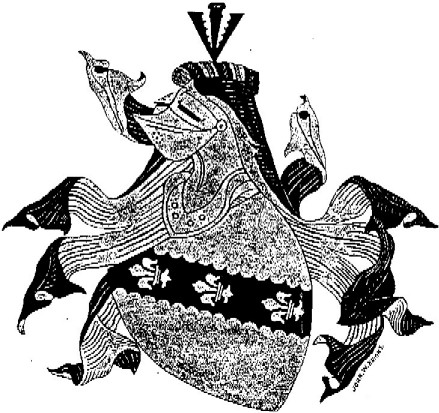

Robert Holt of Stubley Arms
Robert Holt, Knight of Stubbeley Halle Hundersfeld. Anno Domini 1472 was listed but there is not historical evidence to show he was actually knighted. He was a member of the prominent Holt family of Stubley Hall, a medieval manor house near Littleborough (close to Rochdale). The Holts held estates in the area from the 14th century onward, with John de Holt acquiring Stubley in 1330. Robert appears in family heraldry as "Robert Holt, Knight of Stubbeley Halle, Hundersfeld, Anno Domini 1472," often linked to the family's coat of arms (e.g., argent on a fesse engrailed sable, three fleurs-de-lis of the field, for the Holt of Stubley branch).
